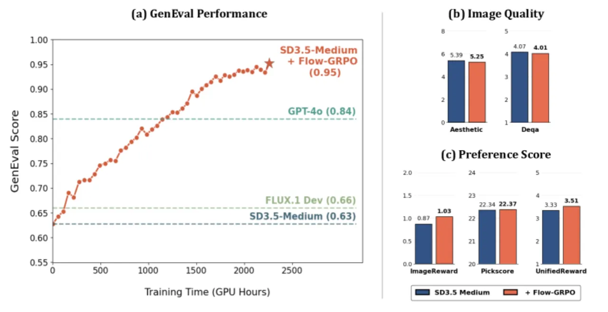
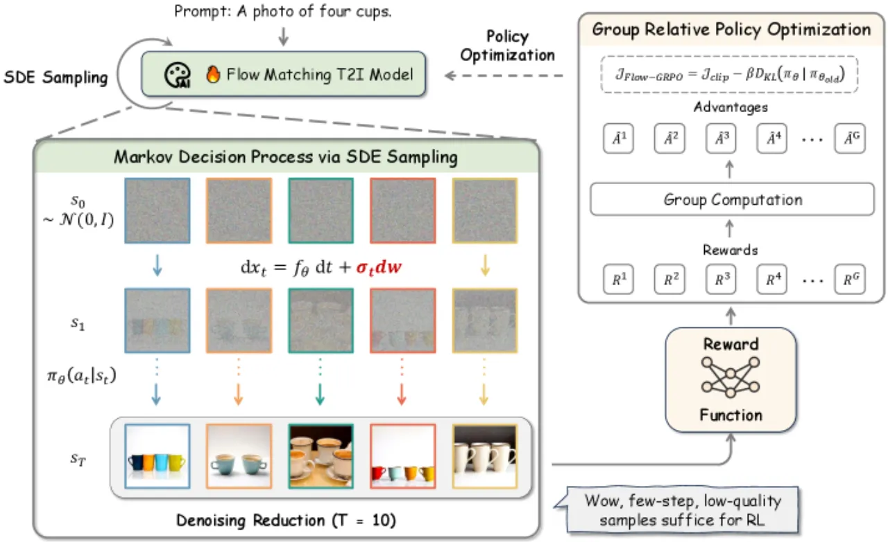
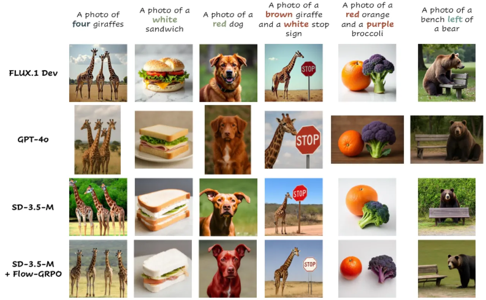

Flow-GRPO 将 GRPO（Group Relative Policy Optimization）引入 flow matching 生成模型。通过两项核心策略——ODE-to-SDE 转换（保持边缘分布不变的随机化）和 Denoising Reduction（训练时减少去噪步数）——实现了高效的在线 RL 训练，在组合图像生成（GenEval 63%→95%）、视觉文字渲染（59%→92%）和人类偏好对齐上均取得显著提升，且几乎无 reward hacking。
Flow matching 模型（如 SD3.5、FLUX）在图像生成上表现出色，但在多对象组合、属性绑定和文字渲染等复杂场景下仍有明显短板。在线强化学习（online RL）已被证明能显著提升大语言模型的推理能力，然而将其应用于 flow matching 模型面临两大根本挑战。
"This need for stochasticity in RL conflicts with the deterministic nature of flow matching models." — Flow matching 依赖确定性 ODE 采样，无法直接支持 RL 所需的随机探索；同时 flow model 推理需要大量去噪步数，数据收集代价极高。

Flow-GRPO 将 GRPO 扩展到 flow matching 模型，核心包含两项技术创新：（1）ODE-to-SDE 转换，将确定性 ODE 采样转化为保持边缘分布不变的等价 SDE；（2）Denoising Reduction，训练时大幅减少去噪步数以加速数据收集，而推理时保留原始步数以保证质量。

Flow matching 的去噪过程被建模为 MDP（S, A, P, R）：状态 s_t = (c, t, x_t)，动作 a_t = x_{t-1}（模型预测的去噪样本），策略 π_θ 由 flow model 参数化。奖励仅在最终时步给出：R(s_T, a_T) = r(x_0, c)。这一 MDP 视角使得策略梯度方法可以直接适用。
原始 flow matching 使用确定性 ODE（dx_t = v_t dt），无法满足 RL 的随机采样需求。Flow-GRPO 将其转换为等价的反向时间 SDE：
dx_t = [v_θ(x_t) + (σ_t²/2t)(x_t + (1-t)v_θ(x_t))] dt + σ_t dw
其中 σ_t = a√(t/(1-t))，a 为控制随机程度的超参数。经 Euler-Maruyama 离散化后，策略 π_θ(x_{t-1} | x_t, c) 成为各向同性高斯分布，可以闭式计算 KL 散度，无需额外打分网络。关键数学保证：此 SDE 与原 ODE 在每个时间步的边缘分布完全相同，即转换不改变模型的生成分布。
GRPO 无需 critic/value network，通过组内相对归一化来估计优势：对每个提示词 c，采样 G 张图像，优势 Â_i = (R_i − mean(R)) / std(R)。训练目标：
J_Flow-GRPO = E[f(r, Â, θ, ε, β)]，其中 f 包含 clip 截断的 PPO-style 比率项与 KL 正则项 −β·D_KL(π_θ ‖ π_ref)
KL 惩罚是防止 reward hacking 的关键：它将模型约束在预训练权重附近，从而保留图像质量和多样性。
在线 RL 训练时，每次采集样本需运行完整去噪链，成本高昂。实验发现：将训练时去噪步数从 T=40 减少到 T=10，可获得超过 4× 的采样加速，而最终奖励和图像质量不受影响。推理时仍使用 T=40，保持生成质量。进一步减少至 T=5 则不一致地降低训练效率。
在三类任务上评估 Flow-GRPO：（1）组合图像生成（GenEval benchmark）；（2）视觉文字渲染（OCR 准确率）；（3）人类偏好对齐（PickScore）。骨干模型为 Stable Diffusion 3.5-Medium（SD3.5-M）。图像质量通过 DrawBench 上的 Aesthetic Score、DeQA、ImageReward 和 UnifiedReward 独立评估以检测 reward hacking。
| 模型 | Overall | Single Obj. | Two Obj. | Counting | Colors | Position | Attr. Binding |
|---|---|---|---|---|---|---|---|
| FLUX.1 Dev | 0.66 | 0.98 | 0.81 | 0.74 | 0.79 | 0.22 | 0.45 |
| GPT-4o | 0.84 | 0.99 | 0.92 | 0.85 | 0.92 | 0.75 | 0.61 |
| SD3.5-M（基线） | 0.63 | 0.98 | 0.78 | 0.50 | 0.81 | 0.24 | 0.52 |
| SD3.5-M + Flow-GRPO | 0.95 | 1.00 | 0.99 | 0.95 | 0.92 | 0.99 | 0.86 |
| 模型 | GenEval | OCR Acc. | PickScore | Aesthetic | DeQA | ImgRwd | UniRwd |
|---|---|---|---|---|---|---|---|
| SD3.5-M | 0.63 | 0.59 | 21.72 | 5.39 | 4.07 | 0.87 | 3.33 |
| Flow-GRPO w/o KL（GenEval） | 0.95 | — | — | 4.93 | 2.77 | 0.44 | 2.94 |
| Flow-GRPO w/ KL（GenEval） | 0.95 | — | — | 5.25 | 4.01 | 1.03 | 3.51 |
| Flow-GRPO w/ KL（OCR） | — | 0.92 | — | 5.32 | 4.06 | 0.95 | 3.42 |
| Flow-GRPO w/ KL（PickScore） | — | — | 23.31 | 5.92 | 4.22 | 1.28 | 3.66 |
注：不加 KL 正则时（w/o KL），Aesthetic Score 从 5.39 降至 4.93，DeQA 从 4.07 降至 2.77，出现明显 reward hacking（图像质量下降）。加入 KL 后质量指标几乎与基线持平。

本工作聚焦于文本到图像任务（T2I）。虽然 Flow-GRPO 有潜力扩展到视频生成，但视频场景面临更复杂的多目标奖励设计（物理真实性、时序一致性、平滑度等），目前缺乏实验验证。
当前奖励函数使用对象检测器、文字识别等规则信号。对于鼓励物理真实性或时序一致性等复杂语义，需要更先进的奖励模型，目前还是挑战。
视频生成比 T2I 消耗的资源多得多，将 Flow-GRPO 在视频规模上应用需要更高效的数据收集与训练流水线，目前的工程挑战尚未被解决。
作者指出：加入 KL 约束可以匹配无 KL 版本的最终高奖励，但需要更长的训练时间。此外，在某些提示词上仍会偶发 reward hacking（如人类偏好任务中视觉多样性的下降）。